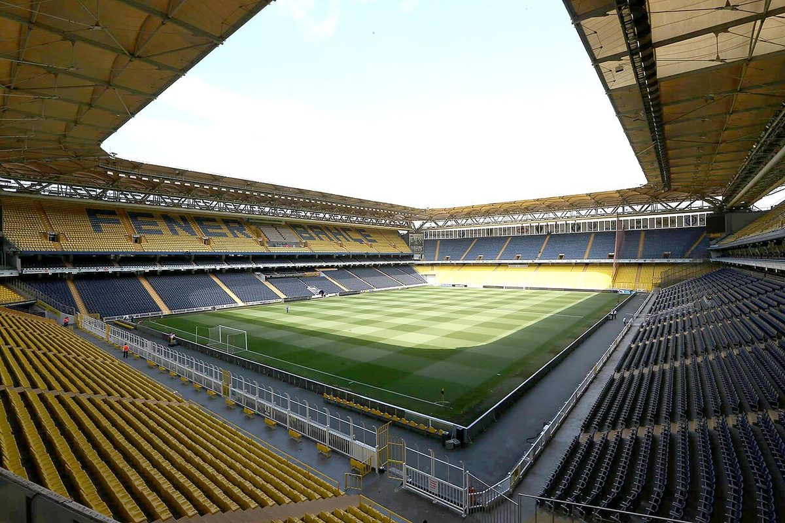

库伊特的“奇迹”：费内巴切两度落后，3比2逆转利物浦
前利物浦前锋迪尔克·库伊特出任临时主帅仅第二周，就看着韦达特·穆里奇在伊斯坦布尔头球绝杀他的老东家。

足球总爱上演剧本，而周三晚上的伊斯坦布尔，剧本写得格外精彩。
迪尔克·库伊特（Dirk Kuyt）在2006年至2012年间效力利物浦六个赛季，为球队出场200多次。上周，在伊斯梅尔·卡塔尔（Ismail Kartal）辞职后，他被任命为费内巴切临时主帅。他执教的第一场欧冠比赛，对手正是老东家，而他赢下了这场比赛。
两度落后，两度扳平，最终反超

利物浦此前三场欧冠全胜。第25分钟，特雷·尼奥尼（Trey Nyoni）凌空抽射将一个落点球打进，帮助利物浦领先。四分钟后，梅森·格林伍德的任意球折射入网，为费内巴切扳平比分。
下半场过半，利物浦再次领先。第69分钟，科迪·加克波传中，亚历山大·伊萨克近距离头球破门。费内巴切迅速回应：几分钟后，阿奇·布朗在远门柱补射得手。
制胜球来自一次界外球长传。布朗将球顶回门前，韦达特·穆里奇（Vedat Muriqi）在第79分钟近距离头球破门。费内巴切守住比分，拿下本赛季欧冠首胜。
“我为所有球员和所有参与创造今晚这个奇迹的人感到非常高兴。”库伊特说。

意味着什么
这场失利让安多尼·伊拉奥拉执教的利物浦以9分排名第八，形势仍然不错，但不再是全胜。费内巴切以5分升至第19位，重新加入附加赛席位的争夺。
五个进球中，有两个来自定位球或界外球长传，而这两球都帮助费内巴切赢下了比赛：格林伍德折射入网的任意球，以及穆里奇由长传界外球打进的制胜球。对利物浦来说，这一课说明了在伊斯坦布尔，领先优势能多快化为乌有。
对于曾在利物浦拼尽全力的库伊特而言，这是一个完美的开局。但他比任何人都清楚，一个夜晚成就不了一个赛季。